| This was one BUSY month!
There are over 100 pictures on this page, so prepare yourself! Highlights
include a visit from my Mom, the completion of the Eureka Montana Outdoor
Quilt Show (a major undertaking), the county fair, and
much more. Pop some popcorn and settle in for a lot of
pictures! |
|
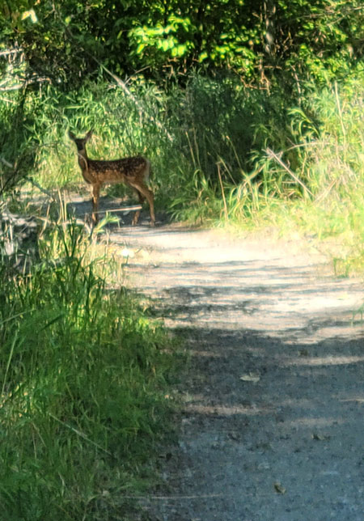 |
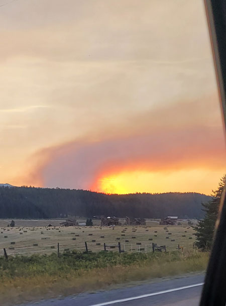 |
| A cute fawn checking out me & Buddy while we walked on the Rails to Trails path. | A forest fire in the Tally Lake area contributed to bad smoke
cover in the Flathead Valley, and eventually in the Eureka area. |
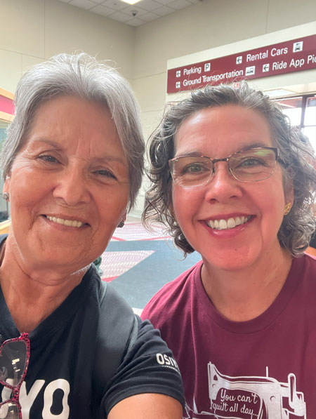 |
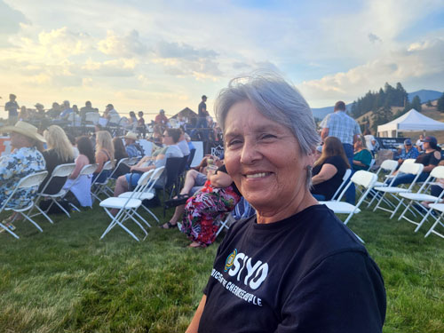 The first thing we did was to join Eric and assist with setup for the
Eureka Montana Immediately after that, we attended a concert at the Riverstone Family Lodge. |
| Mom arrives! She went through hell & high water to get
up here on time after United cancelled her first flight the night before her trip. |
|
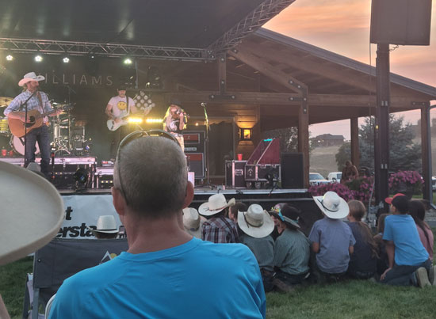 |
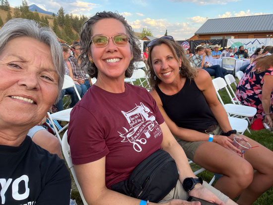 |
| All the little cowboys were so cute, sitting up close to the stage for Chancey Williams. | Amy joined us for a great evening out before a super busy day the next day. |
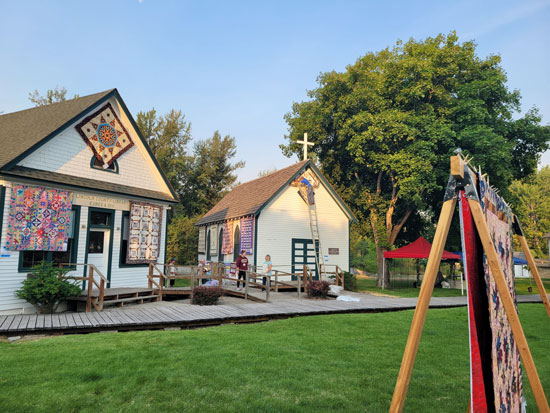 VERY early the next morning, the team was all down at the Historical
Village to start setting up For awhile, Eric was the only person willing to go up on the high
ladders and there were about |
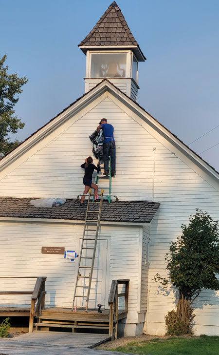 |
| Thankfully, Amy showed up and gave Eric a hand. Then I
called brother Larry, who was trying to enjoy a visit from his Navy friends. He & the friends showed up and worked like troopers to help get all the quilts hung - hurray for Casazzas and Navy friends!! |
|
|
Keith Taylor is our local resident amazing photographer. He put together this slideshow and footage of the show this year. It's great!
|
|
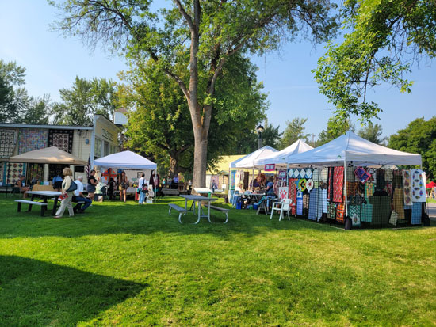 |
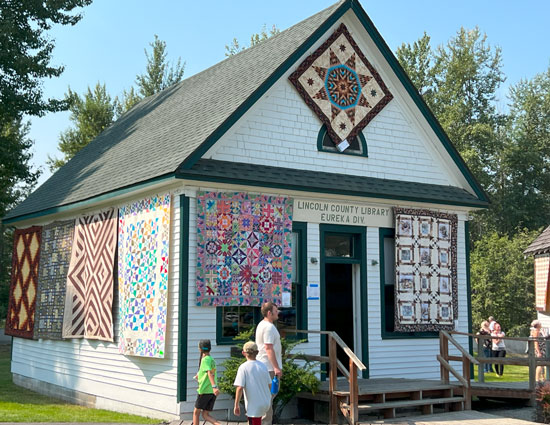 |
| Here's a view of the lawn area where the boutique and vendors were set up. | The old buildings in the Historical Village look so nice all covered in quilts. |
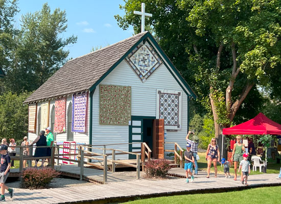 |
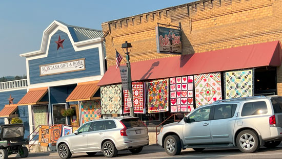 |
| My Mom worked her butt off in the heat all day, helping me
& our team put on this amazing show.
Eric & Amy also stepped up and worked the whole day when two key
volunteers didn't show up |
The quilts stretch all the way up our main street for about a mile. We had almost 600 quilts this year. |
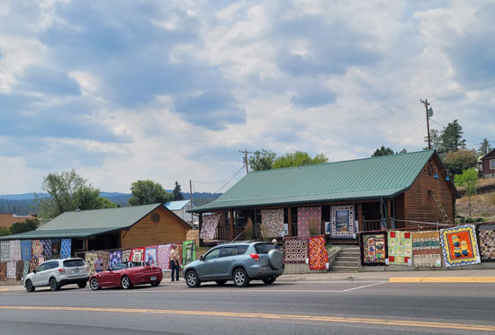 I did the layout for the show and really struggled to find room for all
the quilts. We covered every |
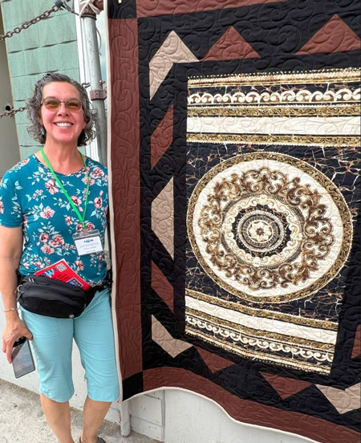 |
| I asked Mom to take pictures of me with some of my quilts. | |
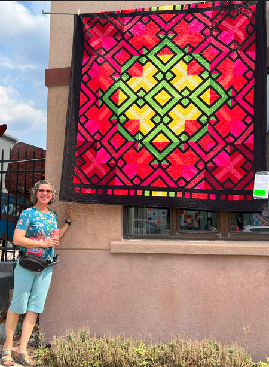 |
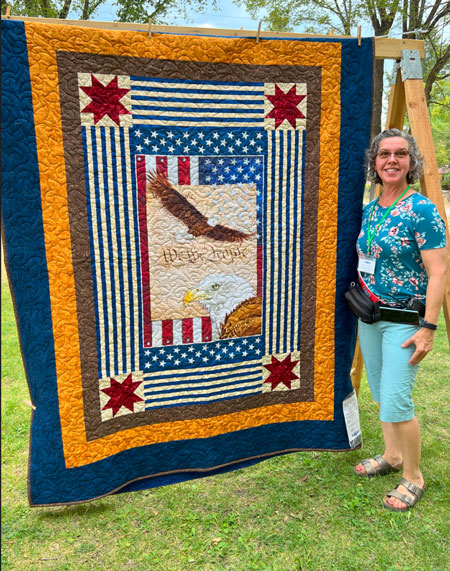 |
| I loved this one, I had just finished it right before the show
and it sold, so I didn't get to spend much time admiring it. |
This was my contribution to the Quilts for Heroes program, where
the quilts are all donated to the PTSD ward of the nearest Veterans' Hospital. |
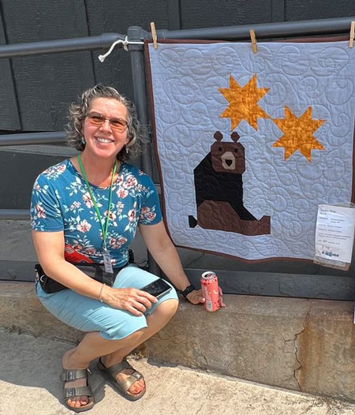 |
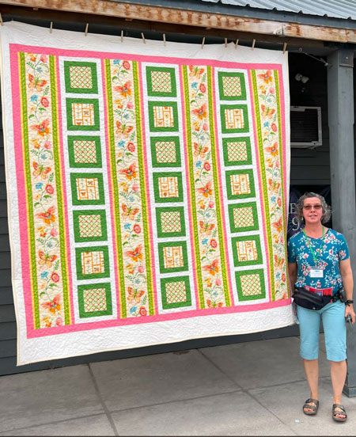 |
| I think this is one of the cutest baby quilts I've made, I just love it! | This one is called "Flutterby". It's cheerful butterflies. |
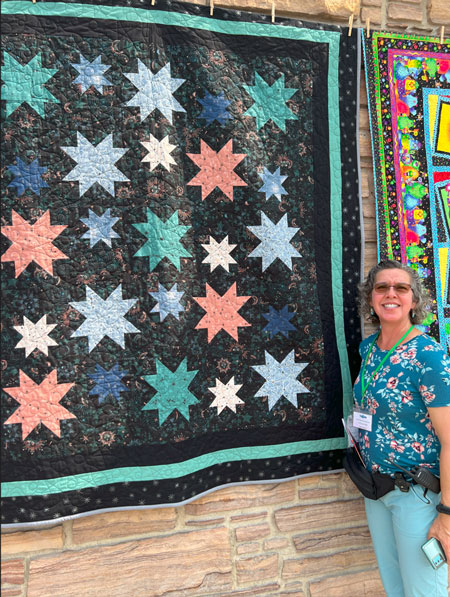 |
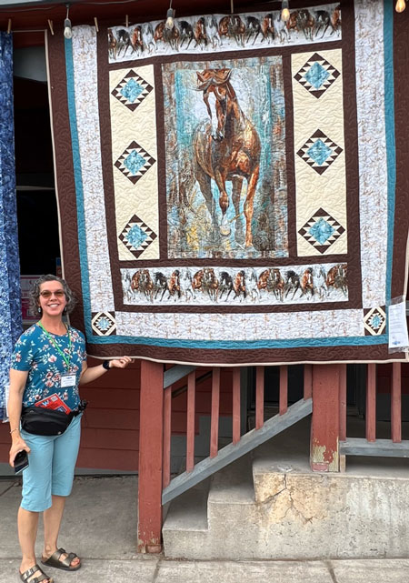 |
| This I proudly donated to a fund-raiser for two of Mom's running
friends from my home town who were hit by a car while out running. |
This was one of the most popular quilts I've ever made. People love this quilt. |
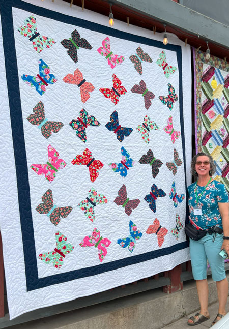 |
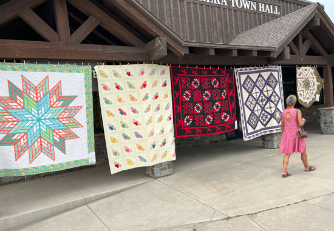 Quilts adorning the town hall, and pretty much every building in downtown Eureka. |
| This one was called, "Dancing Butterflies", it later sold on my Etsy shop. | |
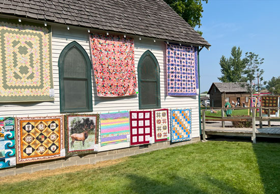 The green & yellow quilt on the upper left is one of mine. |
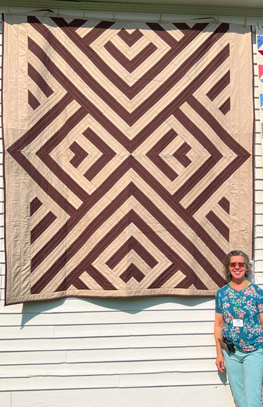 |
| Here I tried a modern pattern called, "Mountain Getaway" | |
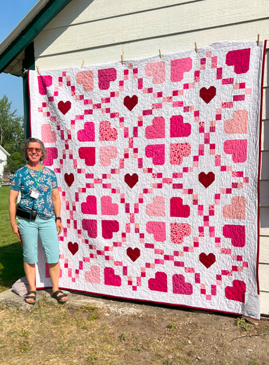 |
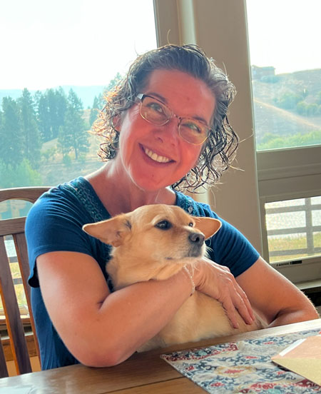 |
| This was a pattern designed to be made in dark colors with fall
leaves, but I wanted to see what it would look like in pink with hearts instead of leaves. Cute! |
Finally, the long and trying day is over and we can now enjoy
Mom's visit properly! |
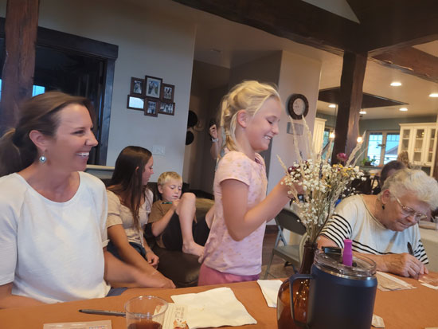 |
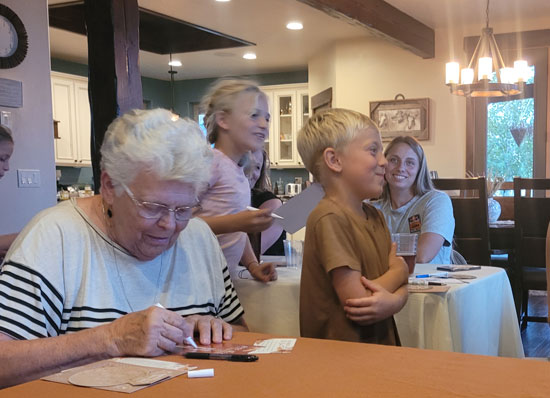 |
| Here we are at a family bridal shower for my niece Kaitlyn, Dan's youngest daughter. | Hunter was telling us a BIG story about how he got his latest
injury - this one above his eye. He is quite the character. His Mom Ashley looks on while he tells his big tale. |
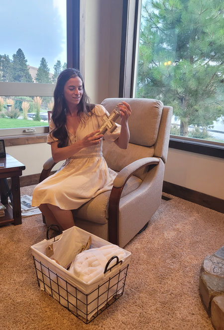 |
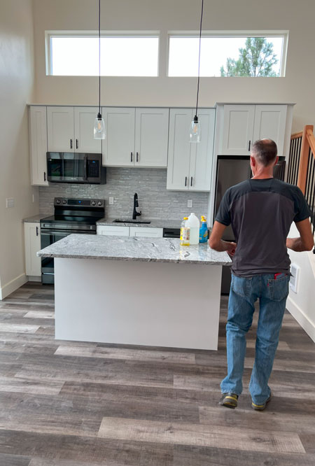 |
| Kaitlyn, looking so calm even though she just found out
that the location for her wedding that's less than a week in the future is no longer accessible due to a forest fire. They were in the midst of re-planning her wedding to her parent's house, which is 4 hours away from the planned wedding location. Stress city! |
Next Eric takes Mom on a tour of the Lodge Bluff Homes.
The last time Mom visited, they had been about to pour the slabs for them - what a difference a year makes! |
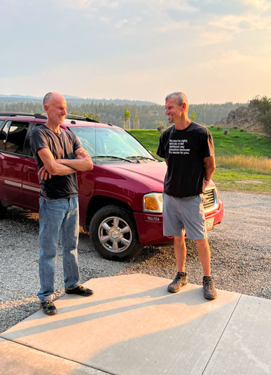 |
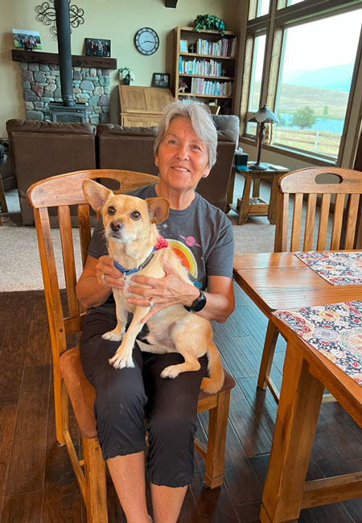 |
| The man, the myth, the legend - Mike O'Neil. He keeps Eric
sane.
His shirt says, "No you're right, let's do it the dumbest way possible because it's easier for you." |
Buddy, with a rare display of affection for someone who isn't me
or Eric. Mom is in the pack now! |
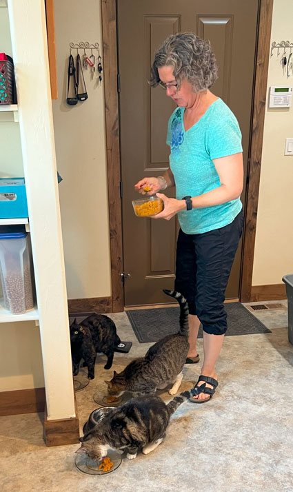 |
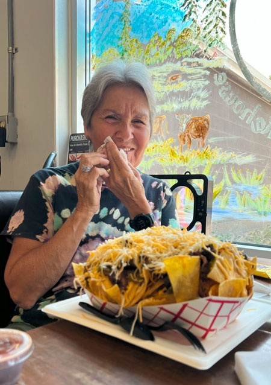 |
| Mom got a kick out of how the cats are trained to an alarm clock
as the time for their food. We got tired of them pestering us to feed them so Eric came up with the idea of putting the responsibility on the alarm clock - it worked! |
Lunch at The Branding Iron Butcher Shop & Smokehouse - a
Casazza-related local business. Mom is a huge supporter of the shop & associated food truck on social media, so they hooked her up with their nacho special. She was overwhelmed! |
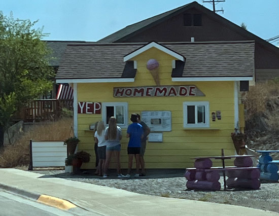 |
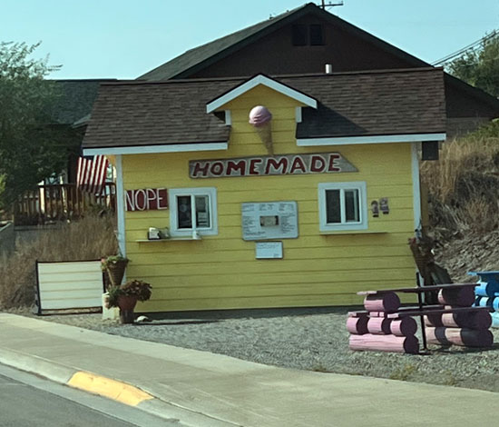 |
| Mom loves Mr. G's ice cream, especially his Open/Closed sign - "Yep" and "Nope"! | |
|
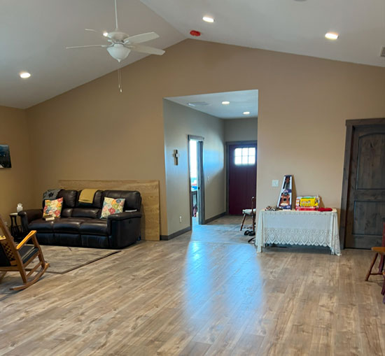 |
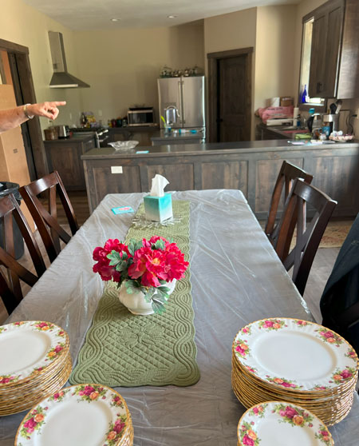 |
| Next Rose gave us a tour of her
latest project, which she calls, "God's House." It was under
construction the last time Mom visited.
|
|
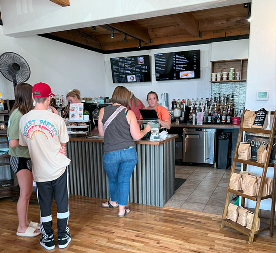 |
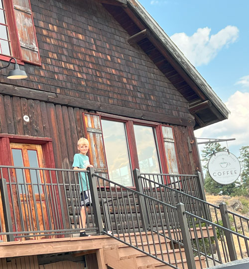 |
| On one of many visits to the coffee shop, another
Casazza-related local business. Mom met some new friends here from Amsterdam, who enjoyed hearing about her impressions of visiting there years ago. |
Carter Casazza, he and Brodie were good buddies when Brodie visited in 2021. |
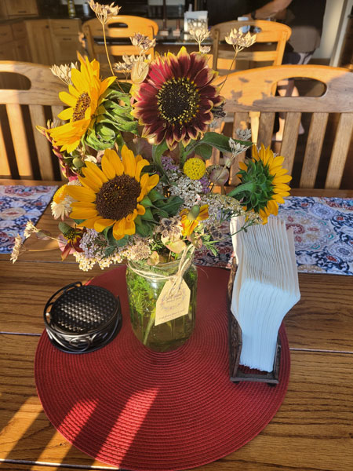 |
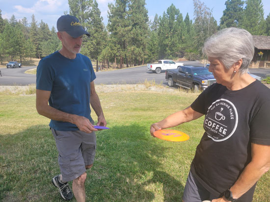 Next was a trip to teach Mom how to play disc golf. We don't
actually know how to play |
| Sweet sister-in-law Kristi blessed me with this beautiful
bouquet, made by my dear friend & neighbor Kip through her business, "Son Shine Flowers." |
|
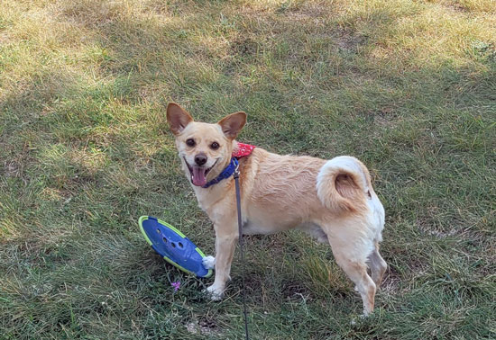 |
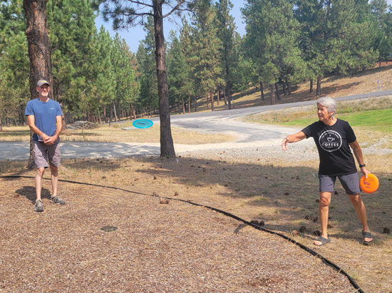 |
| Buddy gets his own Frisbee in an attempt to make him less
annoying, but it doesn't work. He tries to fetch all the discs! |
Mom's got the hang of it now! |
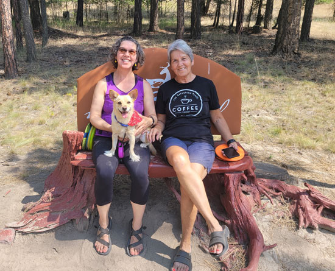 The best picture we took together during her trip was catching a rest during our game. |
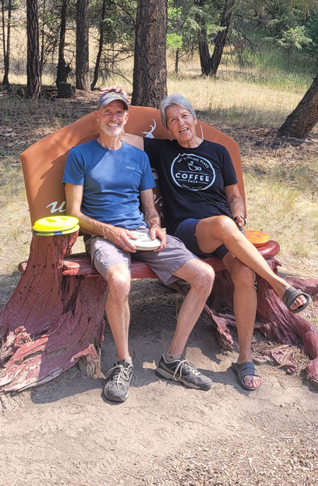 |
| And here she's teasing Eric, she got a real smile out of him! | |
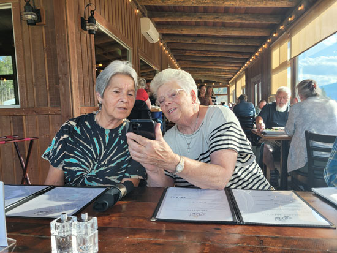 Next we went to dinner with Dan & Rose at beautiful Abayance
Bay. It was Eric's birthday that |
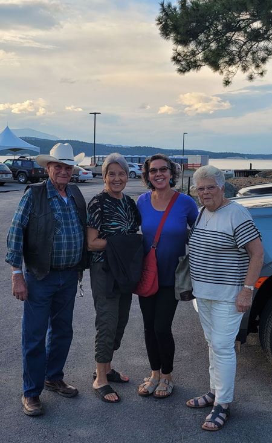 |
| In the parking lot after dinner. | |
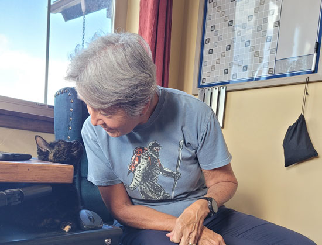 Feisty, making love eyes at Mom in my office. |
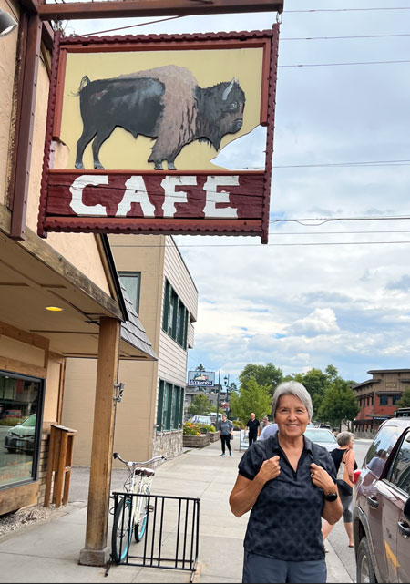 |
| The Buffalo Cafe is a landmark in Whitefish, MT, so we had to
eat there while doing some shopping in the Flathead Valley. |
|
| Next was a picnic for my Eureka quilting guild, Scraps-n-Threads. | Mom made fast friends with Peggy over their shared love of making aprons. |
|
Taking what we call, "our walk", which requires a gun and/or
bear spray at this |
|
| Enjoying the time together and the beautiful place where we get to walk. | |
|
We saw this big pile of bear scat on our walk, but thankfully not the bear who left it! |
|
| Lodge Bluff Homes in the afternoon light. | Next we went around to look at the preparations for Kaitlyn's
wedding. The bridal party got ready at The Timbers Lodge, another Casazza-family business. Love these personalized hangers! |
|
They built these benches for the ceremony, what a beautiful spot! |
|
| Now we're checking out the site for the wedding. Keep in
mind, they had about 7 days notice that the wedding would be held here! These stumps were to be used as little tables for guests who were standing around. |
|
|
Mom took these pictures of our house which came out very nice. |
|
| The dance floor was a work in progress when we visited, but getting close. | |
|
Buddy is trying to figure out how to get back inside, no doubt covered in mud! |
|
| Have gun, have dog - ready to head out for another walk. | |
|
The mountains near our house, looking lovely in the late afternoon light. |
|
| Here we are putting out a trail cam in the woods near our house. | |
|
This is the D-C Ranch, where all the Casazza boys grew up. Beautiful! |
|
|
|
This is our house and barn as seen from across the lake. Mom took this picture and the one of the ranch above. |
| On a walk with Amy, we let the dogs cool off in the lake at the half-way point. | On a beautiful day, we took all the cats and Buddy out in the yard for some family fun time. |
| Here Rocket likes to imagine that he is the king of the
outdoors. Until it gets cold, or rainy, or he gets hungry. |
Buddy knows about 20 tricks, but this is one he has taught
us. When he flips into this position, we are to say, "Awwww" and immediately reach for his belly. |
| It works every time! We are well trained. | Here Eric gives Buddy a bone but confuses him by holding it in
his own mouth first. Buddy could not figure out how to get it away from Eric. |
|
The old beams were very unsafe, but are also very heavy. He will
wait for winter & burn them |
|
| One of Eric's summer projects was replacing the old, rotten
beams that protect "the drop", where the water pours into the lake. |
|
| Smoky day! Thankfully we didn't have a lot of them this summer. | Buddy, during his very favorite activity - chasing pebbles that we throw into shallow water. |
| We share land with the neighbors, who have a mule and two
horses. We always carry Buddy when we get near that mule, Gilbert is not a fan of our Buddy-boo! |
Dan & Rose hosted a big spaghetti dinner at God's House for
their anniversary. Here Rose proudly wears the beautiful apron my mother made for her. |
| The food is all laid out, read for the hoard of Casazzas to descend on it. | There's lots of room for groups to gather. |
|
Aubrey had one of her friends with her, and Jeb & Amy's new exchange student, Beatrix, from Spain. |
|
| At the Lincoln County Fair, watching the dog costume contest. This was my favorite! | |
|
Working with Dan's family to set up a "Casazza Crowd" section in the bleachers for The Bull Thing. |
|
| I took this for my Dad, who worries that I'm going to get
attacked by a bear up here. Now that I say it out loud, it is kind of a mean thing to do. Sorry Dad!! :-) |
|
|
Eric, trying to be interested in the quilts while I look closely at every little thing. |
|
| Here I am posing with one of my quilts that I was particularly proud of. | |
| The Bull Thing! This is the biggest event held in Eureka
each year, it's a PBR-sanctioned, televised event that draws thousands from all over the US and Canada. |
I zoomed out to show some of the huge crowd. It's always
an entertaining event. |
| I used to bring my zoom lens and try to get cool shots, but now I just let my cell phone be enough. | Dan, checking the stats while the rest of the family watches the action. It was a good one this year! |
|
Heading out to church the following morning, we were greeted to the
sight of two elk along the |
|
| They stopped to check us out, then took off toward the D-C Ranch. | |
| Mom had a birthday this month. We couldn't
be there, so we sent these flowers as a meager substitute for a big birthday hug. |
A quilt I recently made that I thought was beautiful. It
was purchased by someone in Australia. It took over two weeks to reach her, but thankfully it made it! |
| Looking at the weather, we all knew that August 29th would be
the last day of summer in Eureka. Luke & Kristi just got a new wake boat, so we joined more family and went out with them that evening. |
This is cool dude Carter. |
| Buddy got so much contraband on this trip he got sick. We're going to keep a closer eye on that! | Eric, doing the wake surfing like he's been doing it for
years. Usually he's water-sport handicapped, so we were all happy that he could do this so well. Lucas, Cody, and Amy look on. |
|
This is Mom's "Tribe" - a group of ladies who have become
very close-knit friends through their Sadly, two of these ladies were hit by a car in June while out running
early one morning. The The other lady, Shelly - shown pictured in the background, nearly died
4 times and spent months This photo was taken at a fund-raiser for Shelly to help with her
ongoing hospitalization expenses. |
|
| Bobbi Jo ended up buying the quilt that I made, but my Dad bid
it up so that she had to really want it! I'm so happy to have contributed in some small way. |
|
|
Dan's family's horses, making for a very picturesque sight one
evening. |
|
| This is the apple tree that gets us so many great bear pictures
each year. Unfortunately, this year a squirrel decided to use that hole in the tree for his pantry, so we got approximately 537 squirrel photos to dig through. |
|
|
Braden's football team photo. He is front & center, of course! :-) |
|
| Our church had a baptism campout weekend at Lake Koocanusa.
We were going, but then we discovered we had mice in our camper so had to get that sorted out before we could use it again. Anyway, here we are at the baptism and Buddy is putting up with puppy Frannie, who was too excited for Buddy's taste. |
|
| It was certainly a beautiful setting for our event. | Eli, trying to get us organized so we can start the baptism. |
| Here Eli enlists the help of his father, Ora Jay, to baptize Eli & Leah's son Grant. | Eric, giving Buddy a break from Frannie the happy puppy. |
| Speaking of puppies! Eric's climbing buddies Joel &
Katie were meeting a dog breeder at the coffee shop to pick up a new puppy. We had to crash the occasion! |
Buddy, trying to figure out who was stealing all of the
attention. |
|
Another picture of the horses grazing near the lake. It's just too pretty. |
|
| A hawk in a tree one smoky morning. | |
| These are some fun pictures I found on Instagram. This is
a picture of Eric near his blue truck, also showing a part of Stone Hill, the climbing area just outside of Eureka. Eric has been putting up new routes here to improve an already amazing climbing area. |
This one says: The over-the-head heel hook isn't the crux of
Eric Casazza's new Road Cuts route (Hold Me and Never Let Me Go, 12.d)... I'll consider myself lucky if I can still bend over to tie my shoes when I'm Eric's age... |
| The comment says: I'm almost 39; I often complain that I'm
old... or at least too old for this sh*t. Then I climb with Eric Casazza and I'm reminded that I'm not old...I'm just soft. Eric is 54 and one of the strongest climbers in northwest Montana. Eric worked the moves on TR solo for weeks on this line before bolting it
and sent it clean on his Eric says it's four- star. But I can't confirm. I just have to take his word for it, I'm too ol-...er, soft. |
|